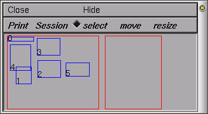

| Home | |
|
Manual
|
The Print & File Window ManagerTo open the Print & File Window Manager, select Print & File Window Manager from the Window menu on the Main menu. The Print & File Window Manager window contains several different buttons, menus and two rectangles.  The left most of the two red rectangles in the window represents the entire display--we will call this the Manager rectangle. Each smaller blue rectangle (with a number in it) represents one of 's windows. The second red rectangle represents a sheet of paper--we will call this the Selection rectangle. It is used to print selected windows to a file or printer and to save selected windows in a session file. To select one of the windows to print or save, click with right mouse button in one of the smaller blue rectangles in the Manager rectangle, and you will see it appear in the Selection rectangle. To remove the window from the Selection rectangle, simply click with the right mouse button in the small numbered rectangle that you wish to remove. You may also want to move (left mouse button) or resize (middle mouse button) the windows in the Selection rectangle. The Print menu gives various options for printing the currently selected windows (i.e., the ones in the Selection rectangle) including a PostScript[TM] printer or a file. To change the printer that you will print to, UNIX users can select the Select Printer option in the Print menu. This will pop up a window in which you can enter the command to print your file to the new printer. Users of MSWin or MacOS should leave Select Printer alone; instead, you should use your operating system's tools to select the printer. If you would like to print the PostScript output to a file, then you can select the PostScript option under the Print menu. |
AcknowledgementsLast modified on 10/29/04 by based on tutorial written by |
|